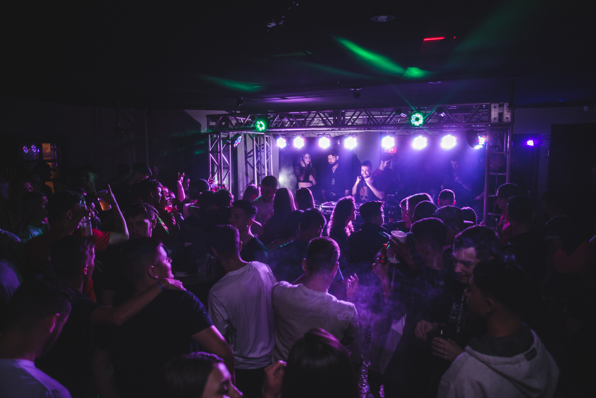
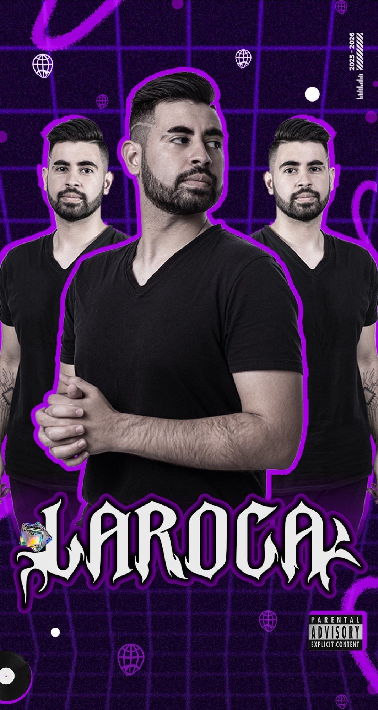

- Funk, rave funk e sets ao vivo com leitura de pista.
- Castro e Ponta Grossa, PR, para qualquer lugar do Brasil.
// Sobre Laroca
Desde 2014, quando o funk ainda ecoava pelas ruas de Castro, Laroca trata a pista como o lugar onde histórias viram vibração: cada set é uma experiência construída na leitura do público.
Com inúmeros shows nacionais, diversos festivais na região e uma agenda em constante expansão, Lucas Laroca Campos está entre os DJs mais promissores da cena funk nacional.
- Seguidores
- +4K
- Shows nacionais
- 20+
- Anos de cena
- 10+
Estilos
- Funk
- Rave funk
- Sets ao vivo
Rave Funk

Ouvir no SoundCloud- 01
Funk
O groove que move multidões, com uma seleção que respeita as raízes e empurra os limites da pista.
- 02
Rave funk
BPMs acelerados, graves pesados e a energia crua da rave misturada com a identidade do funk brasileiro.
- 03
Sets ao vivo
Cada apresentação é única: leitura de pista, energia do público e um repertório feito para o evento.
- 04
Do clássico ao atual
O beat atual mixado com o clássico, numa versão que conecta o público de todas as idades.
| Data | Cidade | Evento / local | Situação | Ação |
|---|---|---|---|---|
| 17 out 2026 | Ponta Grossa, PR | Evento de exemplo | Confirmado | Saber mais |
| 31 out 2026 | Castro, PR | Evento de exemplo | Confirmado | Saber mais |
| 14 nov 2026 | Curitiba, PR | Evento de exemplo | Confirmado | Saber mais |
| 05 dez 2026 | Ponta Grossa, PR | Evento de exemplo | Confirmado | Saber mais |
| Sua data | Sua cidade | Casas noturnas, festas, festivais e eventos privados | Disponível | Reservar |
* Datas de exemplo nesta prévia; a agenda real entra antes da publicação.
- 2014
O começo
Em Castro, PR, Lucas Laroca Campos dá seus primeiros passos como DJ. Festas locais, muito estudo e uma paixão genuína pelo funk.
- 2016 — 2019
Consolidação regional
Sets constantes em casas noturnas, bailes e festas de Ponta Grossa e Castro. O nome Laroca vira sinônimo de energia na cena paranaense.
- 2020 — 2022
Rave funk e expansão
A fusão do funk com a batida pesada da rave define um novo capítulo e abre portas para os primeiros shows nacionais.
- 2023 — hoje
Cena nacional
Shows nacionais, festivais na região, agenda crescente e mais de 4 mil seguidores nas redes. O próximo capítulo é ainda maior.


// Contratar
Sua pista
Casas noturnas, festas, festivais e eventos privados. Mande a data e a cidade no WhatsApp e receba o orçamento.